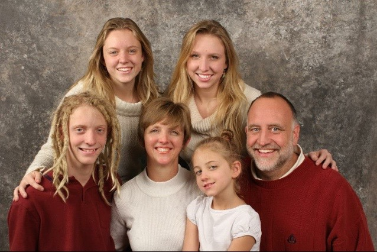
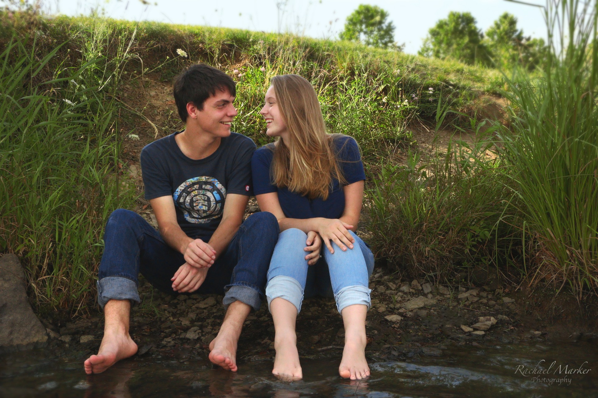
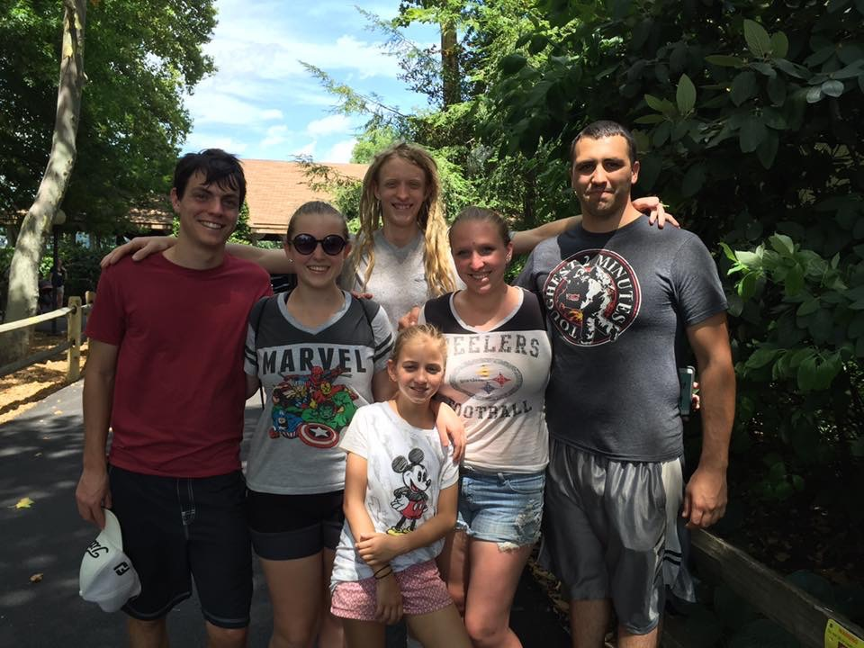
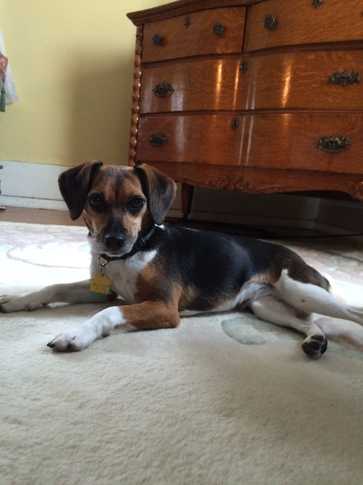
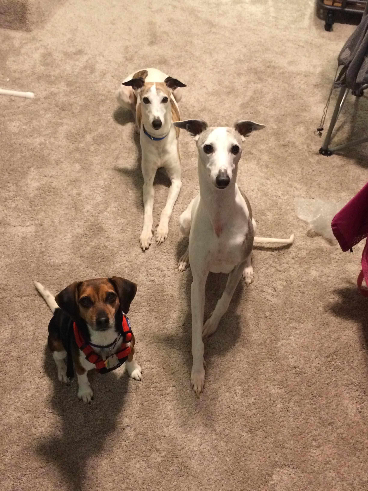

Audrey has grown up performing. From dancing to acting to singing to playing piano, she loves being on the stage, whether it's for a competition, school, education, or pure entertainment. Her favourite thing to perform in is musicals. She gets to dance, act, and sing all at once. Some of the musicals she has performed in include 'Spamalot', 'Return to the Forbidden Planet', 'Cats', and 'The Little Mermaid'.
Audrey is the second of four children born to Dean and Ranae Hunker. She has one older sister, one younger brother, and one younger sister. Her older sister, Rachael, is recently married to James. Rachael is currently studying to become a veterinary assistant. Her two younger siblings are Ty and Chloe. Ty is a senior in high school, hoping to go to start college in 2017 studying Chemistry. Chloe is still in grade school. The most recent addition to the family is Audrey's fiance, Daniel, who is studying to become a civil and structural engineer.
|  |
|---|
|  |
|  |
Audrey has had several pets over the years including birds, turtles, fish, hamsters, and dogs. She currently owns a rescue dog she adopted from Animal Friends of Westmoreland. Her new pet is a six year old chihuahua/beagle mix. Thankfully, she sounds and looks more like a beagle than a chihuahua. Her parents have owned two purebred whippets, Sterling and Strider, for several years and Audrey grew up with them in the house. She loves visiting her parents' house and bringing Belle along to play with the whippets.
|  |  |
|---|